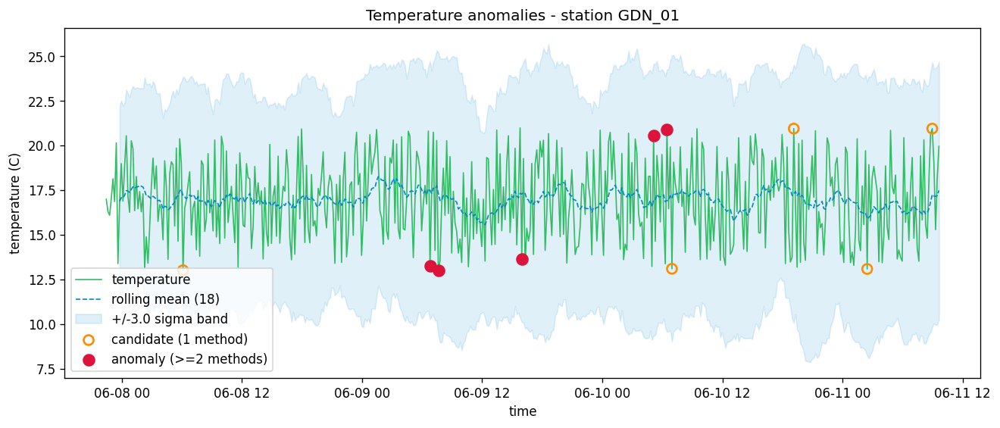
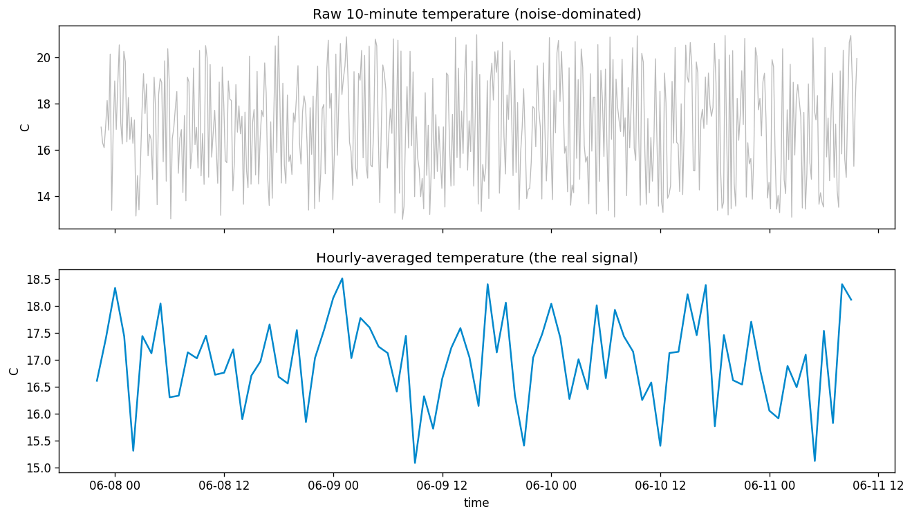

Intelligent Measurement Systems · Project 1
Spotting unusual temperatures in a live weather stream.
Goal
Data
Architecture
Key insight
Methods
Results · GDN_01

Raw vs aggregated

Sensitivity
Takeaways